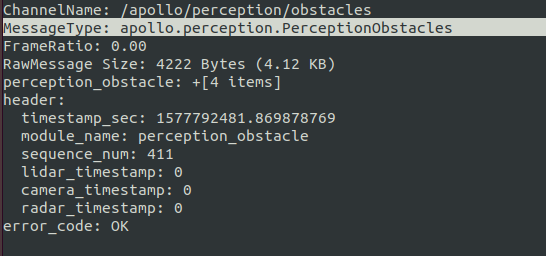
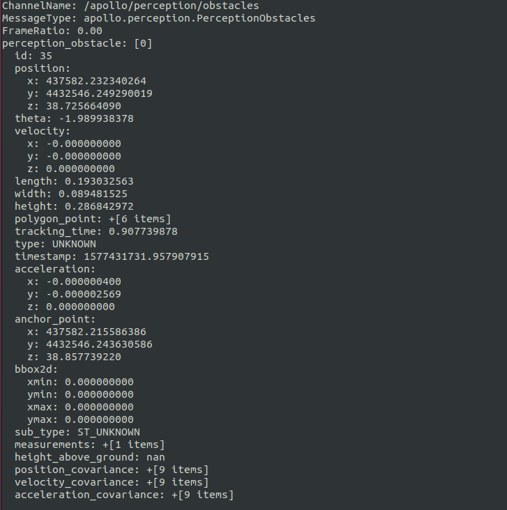
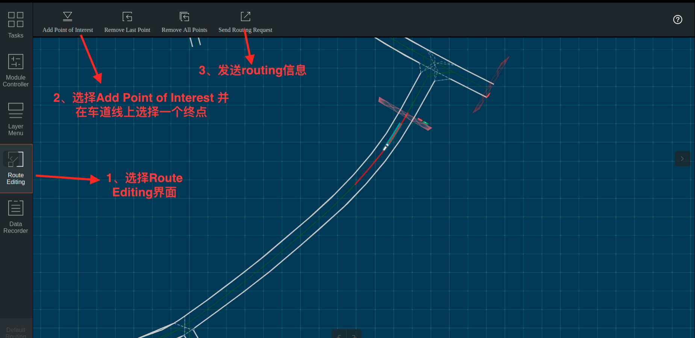

基于摄像头的封闭园区自动驾驶搭建–自动驾驶演示
前提条件
正确完成了基于摄像头的封闭园区自动驾驶搭建–感知设备集成。
正确完成了基于摄像头的封闭园区自动驾驶搭建–感知适配。
正确完成了封闭园区自动驾驶搭建–虚拟车道线制作。
正确完成了封闭园区自动驾驶搭建–规划适配。
确保在道路平整、车少人少等相对安全的情况下实验。
确保至少两人操作，一人操作工控机，一人操作遥控器，做好随时接管准备。
概览
该用户手册旨在帮助用户完成基于Camera感知的封闭园区自动驾驶
启动流程
1. 启动can卡
进入can卡目录启动can卡，用以下命令启动
cd ~/SocketCan/
bash start.sh
2. 编译项目，启动Dreamview
进入docker环境，用gpu编译项目，启动DreamView
cd /apollo
bash docker/scripts/dev_start.sh
bash docker/scripts/dev_into.sh
bash apollo.sh build_opt_gpu
bash scripts/bootstrap.sh
3. 启动所需模块
在浏览器中打开(http://localhost:8888)，选择模式为Dev Kit Debug， 根据车辆铭牌信息选择对应的车型(详情见下表)，并选择相应高精地图，在module Controller标签页启动Canbus、Camera、GPS、Localization、Transform模块。
铭牌信息 |
车型选择 |
|---|---|
Apollo D-KIT Lite |
dev_kit |
Apollo D-KIT Standard |
dev_kit_standard |
Apollo D-KIT Advanced(NE-S) |
dev_kit_advanced_ne-s |
Apollo D-KIT Advanced(SNE-R) |
dev_kit_advanced_sne-r |

4. 检查各模块channel是否正确
在docker中输入cyber_monitor命令并检查以下channel（使用上下方向键选择channel，使用右方向键查看channel详细信息。关于cyber_monitor更详细使用，请参考CyberRT_Developer_Tools）：
channel_name |
检查项目 |
|---|---|
|
确保能正常输出数据 |
|
确保能正常输出数据、 |
|
确保能正常输出数据、帧率在15帧左右 |
|
确保能正常输出数据 |
|
确保能正常输出数据 |
|
确保能正常输出数据 |
|
确保能正常输出数据 |
5. 启动Camera感知
在dreamview中启动Camera Perception模块，使用cyber_monitor查看/apollo/perception/obstacles是否正常输出，并在dreamview上查看障碍物信息：

6. 感知验证
使用cyber_monitor查看/apollo/perception/obstacles是否正常输出，并在DreamView上查看障碍物信息：查看车前方10米处运动的人或者自行车（自行车上要有人），在DreamView上查看障碍物颜色以及位置速度信息（自行车青蓝色，行人黄色，车辆绿色），如下图所示：

/apollo/perception/obstacles的数据如下图所示：


确保在Dreamview上能看到障碍物并且/apollo/perception/obstacles有障碍物信息。
7. 启动 Planning、Prediction、Routing、Control模块
在Module Controller标签页启动Planning、Prediction、Routing、Control模块。

在Routing Editor标签中点击Add Point of Interest按钮添加一个point, 然后选择Send Routing Request按钮发送添加的routing点

8. 验证Planning、Prediction、Routing、Control模块是否启动成功
从DreamView中查看会出现一个蓝色的线以及一个红色的stop标志。如下图所示：

在车前方存在人或者自行车（车上有人）时，在Tasks标签页查看Planning轨迹线，如下图所示：

在docker环境中输入命令cyber_monitor并查看Planning channel信息：

如果出现上图所示轨迹线和topic信息，表示规划模块适配和开环测试通过，否则继续查看log信息进行调试。
9. 启动自动驾驶
在附近没有人员和车的情况下，遥控器下放权限并在Tasks标签页中点击Start Auto使车进入自动驾驶状态，在车自动驾驶这个过程中做好随时用遥控器接管，确保安全的准备。
常见问题
1. 自动驾驶过程中车轮来回摆动，有画龙现象
这种情况一般是车辆动力学标定没有做好，建议重新进行动力学标定
2. 车辆换道、停止等效果不理想
在保证感知、定位稳定的前提下，可以尝试修改planning配置文件中的相关参数进行调整，详情参考封闭园区自动驾驶搭建–规划适配